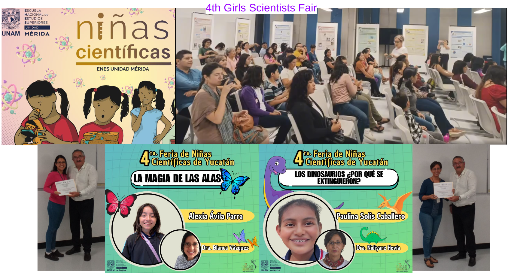

Artificial Inteligence in Biomedicine Group (ArBio) News
In this space, we publish the latest news of the ArBio group.
News
4ta Feria de Niñas Científicas de Yucatán
En la 4ta Feria de Niñas Científicas de Yucatán se presentaron dos trabajos de investigación,
el primero se tituló "Los dinosarios, ¿porqué se extinguieron?" desarrollado por Paulina Solís y dirigido por la Dra. Nidiyare Hevia,
y el segundo trabajo se tituló "La magia de las mariposas" desarrollado por Alexia Ávila y dirigido por la Dra. Blanca Vázquez
Sponsor: ENES Unidad Mérida.
Date: Jun 21, 2024.
 Click to see additional information
Internship of Daniel Colín a master's student at the University of Rennes, France.
The internship is focused on the evolution processes of liver cancer (cellular hepatocarcinoma).
In particular, image processing is being carried out for
the extraction of parameters to contrast-enhanced
computed tomography (CT) images in a dynamic manner.
The goal is to identify relevant parameters that indicate the
level of vascularization of the malignant tissue and improve treatment
planning by accurately selecting patients suitable
for SIRT (Selective Internal Radio Therapy) treatment.
Sponsor: University of Rennes, France.
Date: From april to june, 2024.
1st place in the state award for "Tesis Yucatán 2024" in the area of
Physics and Engineering at the undergraduate level with the thesis titled
"Técnicas de aprendizaje computacional y de textura en microfotografía Chagásica"
directed by Dra. Nidiyare Hevia Montiel.
Sponsor: Gobierno del estado de Yucatán, Secretaría de Investigación, Innovación y Educación Superior (SIIES).
Date: May 23, 2024.
Strengthening partnerships in the clinical area
Dr. Jorge Pérez strengthens collaborations with researchers and specialists from the
Instituto Nacional de Perinatología Isidro Espinosa de los Reyes.
Date: May 22, 2024.
Talk: "Artificial Intelligence in Biomedicine Group (ArBio)"
In: International Networking Workshop on AI and Computational Image Analysis 2024.
Sponsor: UNAM Campus Sisal.
Date: March 12, 2024. Click to see additional information Link to Facebook
Reconocimiento Sor Juana Inés de la Cruz a la Dra. Nidiyare Hevia Montiel.
Sponsor: UNAM.
Date: March 8, 2024. Click to see ceremony
Entrevista: "Inteligencia artificial en el estudio experimental de la enfermedad de Chagas."
Sponsor: El Heraldo Radio.
Date: February 27, 2024.
Análisis de ultrasonido de pez mero.
Sponsor: Colaboración con el Proyecto Mero UNAM.
Date: February 21, 2024.
Third place in the Best Thesis Award "José Negrete Martínez" to Dra. Blanca Vázquez. Doctoral Thesis Category.
Sponsor: The Mexican Society for Artificial Intelligence (SMIA).
Date: Novembre 15, 2023.